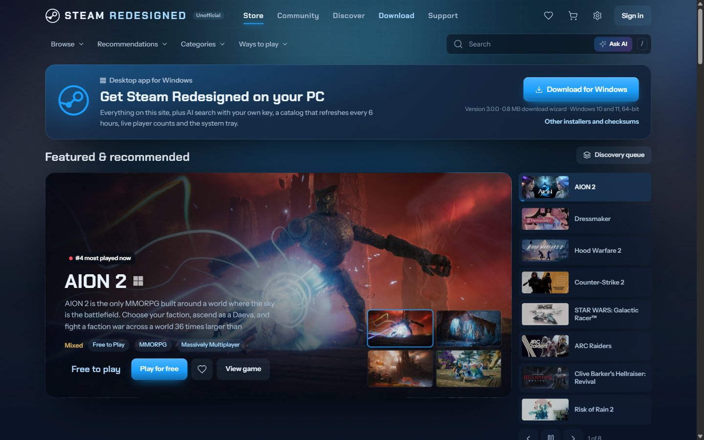
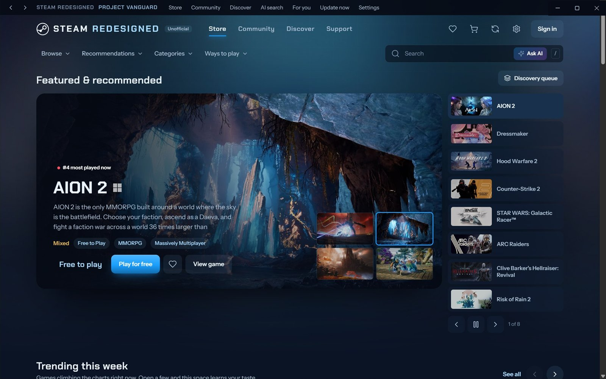
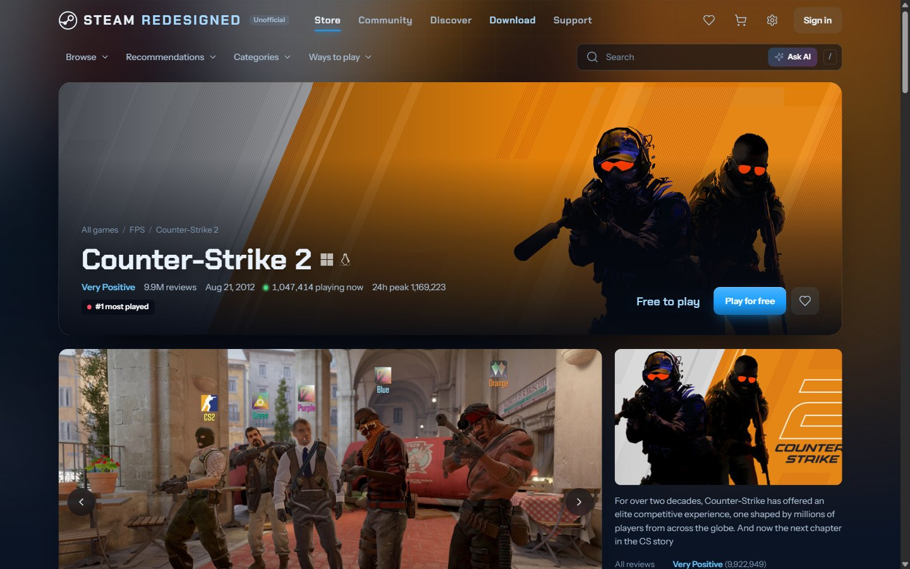
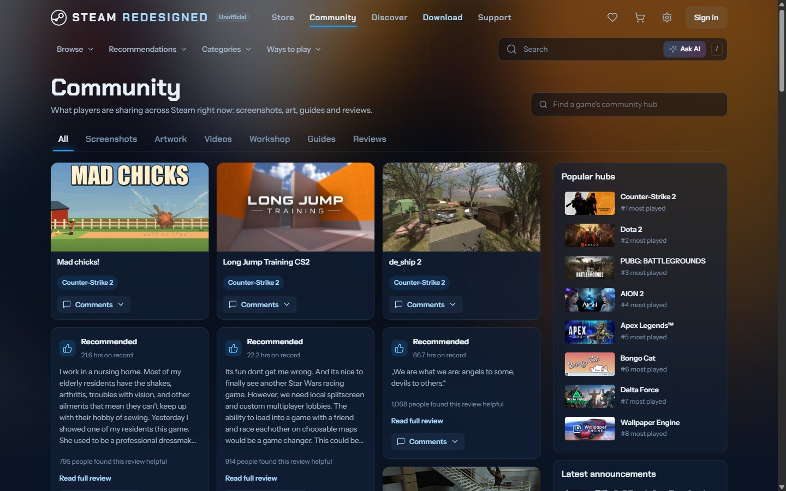
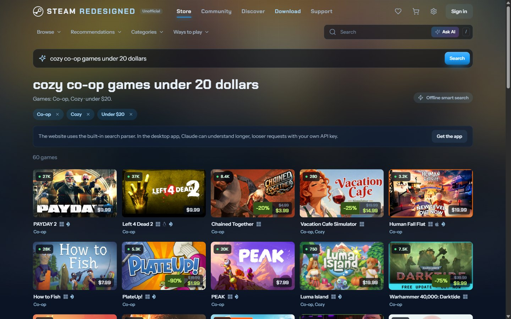
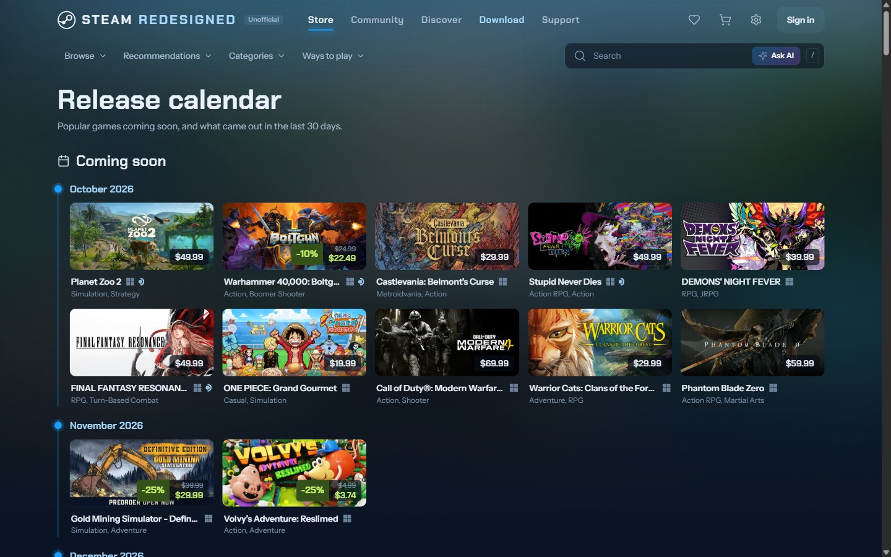
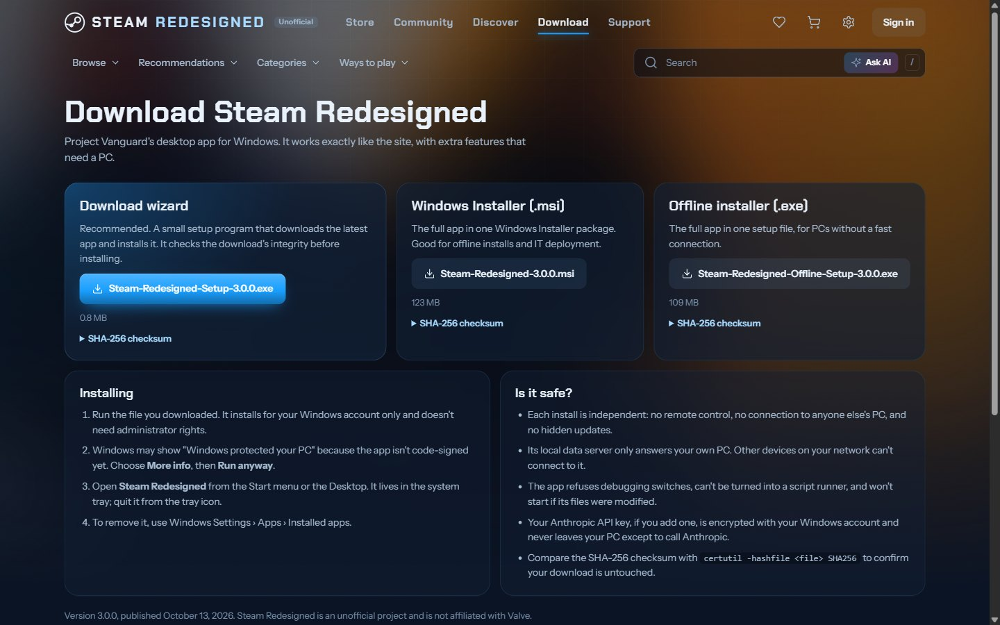
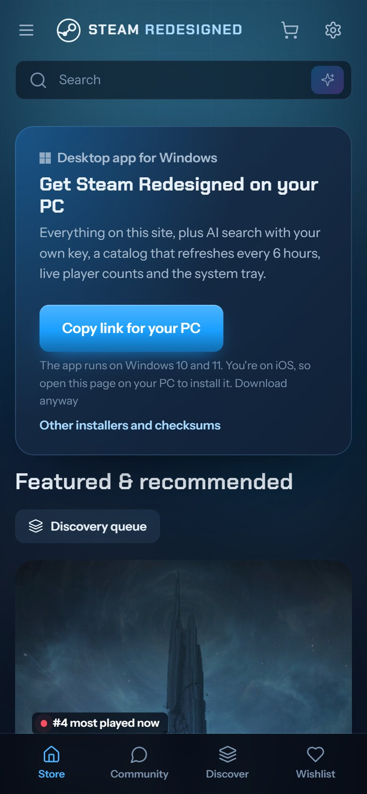

Setup wizard
Recommended. A small program that downloads the app, checks it hasn't been tampered with, and installs it.
Steam-Redesigned-Setup-3.0.0.exeSHA-256 checksum
c9dc972a63f88f11a79eb6cdbdac402fb825f23905aecad201a6ef44c0b8b007An unofficial redesign of the Steam store and community, running on live Steam data. Use it as a Windows app or right in your browser.

Every screen is rebuilt from scratch with new layouts, motion and colour, while keeping Steam's blue.






| Feature | Windows app | Website |
|---|---|---|
| Store, game pages, community, recommendations | Yes | Yes |
| Catalog refresh | Every 6 hours, or on demand | Daily |
| AI search with Claude | Yes, with your own API key | Built-in search only |
| Catalog size and player limit settings | Yes | No |
| System tray, notifications | Yes | No |
| Works on phones, Macs and Linux | No | Yes |

Version 3.0.0, released October 13, 2026. For Windows 10 and 11, 64-bit. Everything installs for your Windows account only and doesn't need administrator rights.
Recommended. A small program that downloads the app, checks it hasn't been tampered with, and installs it.
Steam-Redesigned-Setup-3.0.0.exec9dc972a63f88f11a79eb6cdbdac402fb825f23905aecad201a6ef44c0b8b007The whole app in one Windows Installer package. Good for offline installs and IT deployment.
Steam-Redesigned-3.0.0.msic63e7eebe6c25d3856cc24eb2ac4cbcc0f2015c473c75032d753d3108bc6069cThe whole app in one setup file, for PCs without a fast connection.
Steam-Redesigned-Offline-Setup-3.0.0.exe26f63b7c0be7740404646b04fe931ae72072c9d15c1e050719af1ee4c12438c6All files and release notes are on the GitHub release page.
Open Command Prompt in your Downloads folder and run:
certutil -hashfile Steam-Redesigned-Setup-3.0.0.exe SHA256The result should match the checksum under the file above.
Installing the app on another PC creates a fully independent copy. Nothing links it back to anyone else's computer.